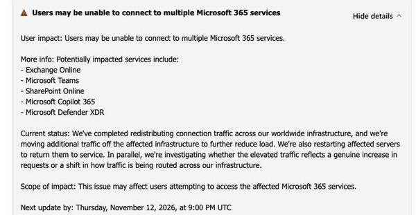
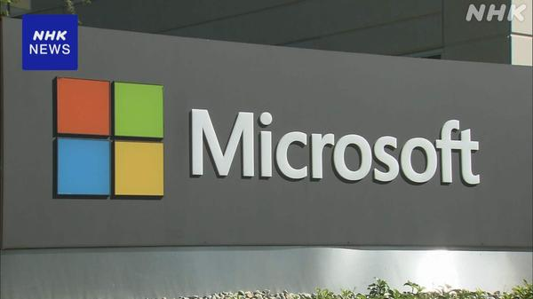
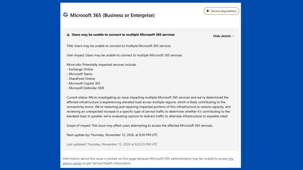
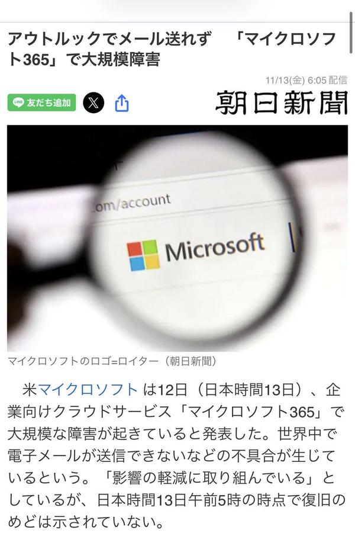
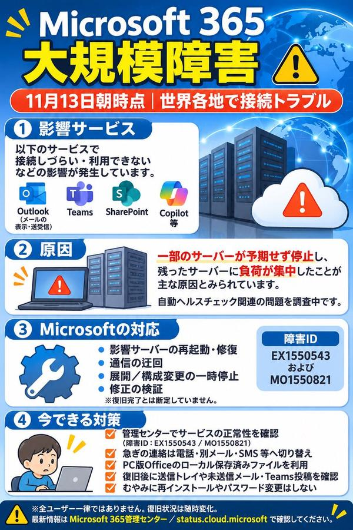

🇯🇵 日本の主要ニュース
🌍 世界の主要ニュース
🤖 AIニュース
NVIDIAのジェンスン・フアンCEOが辞任 クレスCFOが暫定CEOにNVIDIAは12日（現地時間）、1993年の共同創業以来同社を率いてきたフアン氏が社長兼CEOと取締役を即日辞任したと発表しました。中国の情報機関の協力者とされる女性との不倫報道を受けたもので、暫定CEOにはコレット・クレスCFOが就き、取締役会が社内外から後任を選びます。
出典：ITmedia NEWS
米市民団体、OpenAIやGoogleなど5社を提訴 新モデル開発の凍結を要求Public Citizenなど4つの非営利団体は、Anthropic、Google、Meta、OpenAI、SpaceXSIの5社を相手取り、サンフランシスコの裁判所に提訴しました。AIがサイバー攻撃や生物兵器など「壊滅的」な害をもたらしうるとして、より高性能なモデルの開発・提供の凍結を求めています。
出典：AP
AIチャットボットが偽の通販サイトを推薦、調査で判明知財保護企業Podqiの調査で、ChatGPT、Gemini、Perplexityに買い物の相談をすると、偽サイトなど危険なサイトに誘導される場合があることが分かりました。3つの中ではPerplexityの結果が最も悪かったということです。
出典：The Verge
💻 PC・ガジェットニュース
🔥 Xのトレンド（日本）
ジャンルで絞らず上位20件を掲載。「未確認」はX上の投稿だけを根拠にしたもので、報道機関による裏付けはありません。

Microsoft 365の大規模障害で、13日朝からOutlookのメールが送受信できないという報告が相次ぎました。「仕事にならない」といった声が、日本の始業時間に合わせて一気に増えています。
出典：The Verge

Microsoft 365の接続障害を指す言葉です。NHKは、世界各地に影響が出るおそれがあると報じています。
出典：NHK
スターダストプロモーションの男性アーティスト集団EBiDAN（超特急、M!LKなど10組・67人）が、結成15周年で紅白歌合戦に初出場することが内定したと報じられ、ファンが喜んでいます。
出典：スポニチ

Microsoft 365の障害で、Outlook、Teams、SharePoint、Copilotなど複数のサービスが使いにくくなり、社名そのものがトレンド入りしました。
出典：Engadget

カタカナ表記でもトレンド入りしました。「メール送れず」とする報道の見出しを引用した投稿や、「今日はもう休みでいいのでは」と冗談を言う投稿が目立ちます。
出典：X投稿（障害そのものはNHK・日経などが報道）
11月13日は「いい焼き芋の日」とされ、焼き芋の写真やイラストが多く投稿されています。「1か月前（10月13日）がさつまいもの日で、1か月熟成して焼き芋の日」と由来を紹介する投稿もあります。
⚠ 未確認（X情報のみ）
Microsoft 365の略称です。社内システムの担当者が「元の障害なので情シスでは何もできない」と嘆く投稿や、Microsoftが対応中に全社のデプロイ（反映作業）を止めたとする投稿が出ています。
⚠ 未確認（X情報のみ）
日本テレビの朝の情報番組です。金曜パーソナリティのSnow Man阿部亮平さんの髪型や、納豆の食べ方（たれは混ぜた後に入れる派）、天気コーナーの「くぼてんき」さんについての感想が投稿されています。
⚠ 未確認（X情報のみ）

今回の障害で、Microsoftの生成AI「Copilot」も使えなくなったという報告が相次ぎ、トレンドに入りました。
⚠ 未確認（X情報のみ）
timeleszが出演する、アディダスのABCマート限定モデル「GRADAS 2.0」の新CMが公開され、アンバサダーの起用が2年目に入ったことにファンが感謝の投稿を寄せています。新色4色は11月13日発売とされています。
⚠ 未確認（X情報のみ）
きょうは「13日の金曜日」なので、映画『13日の金曜日』のジェイソンにちなんだ投稿が集まっています。前日譚ドラマ『クリスタル・レイク』が配信されていることに触れた投稿もあります。
⚠ 未確認（X情報のみ）
セブン-イレブンで「たまごっち」30周年のフェアが始まり、限定の「まめっち」マスコットが当たるキャンペーンのハッシュタグ投稿が大量に流れています。
⚠ 未確認（X情報のみ）
サーティワンが「31 ティラミスケーキ」を11月13日に発売しました。公式Xが、このハッシュタグを付けて投稿すると抽選で31名にeGiftが当たるキャンペーンを行っていて、応募の投稿が並んでいます。
出典：サーティワン公式X
Xで、1つの投稿に付けられる写真・動画が、10年続いた4枚から最大20枚に増えました。さっそく20枚を貼って試す投稿や、驚きの声が相次いでいます。
出典：Xのニュースまとめ（X社のエンジニアの投稿による）
アディダス「GRADAS 2.0」×timeleszの新CMについて、篠塚大輝さんと橋本将生さんがお互いの成長を紹介する内容だとされ、ファンが何度も見返しているという投稿が集まっています。
⚠ 未確認（X情報のみ）
timeleszの新CM「GRADAS 2.0 × timelesz CM『MY STYLE MY GRADAS』篇」のタイトルです。YouTubeで公開されたCM動画を共有する投稿が相次いでいます。
⚠ 未確認（X情報のみ）
ROIROMと丸山礼さんが美容情報について話し合う新番組「ロイロムと丸山礼の3美会議室」が発表されました。初回は11月24日（火）26時20分から放送で、TVerでも見逃し配信されるとされています。
出典：番組公式X
11月13日は「うるしの日」です。平安時代のこの日に漆の製法が伝わったという言い伝えにちなむと紹介され、漆器の写真やイラストが投稿されています。
⚠ 未確認（X情報のみ）
「きんきんきんようび～♪」で始まるアスキーアート付きの定型文を、各自が少しずつ書き換えて投稿する金曜の朝の恒例ネタが広がっています。
⚠ 未確認（X情報のみ）
きょう13日に大みそかの「第77回NHK紅白歌合戦」の出場歌手が発表される予定です。EBiDAN、モナキ、Ayumu Imazuなどの初出場内定が報じられ、「今日発表？」と待ちわびる投稿が増えています。
出典：日刊スポーツ
Grok Bot がまとめました。